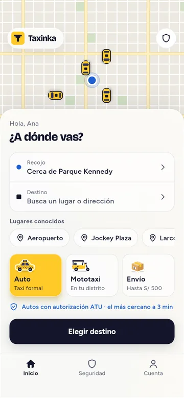
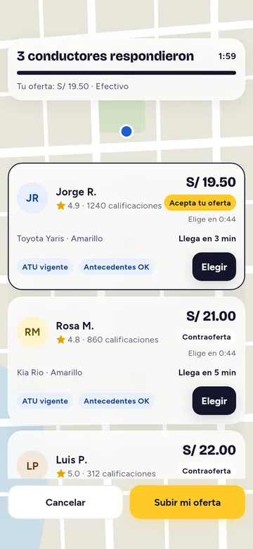
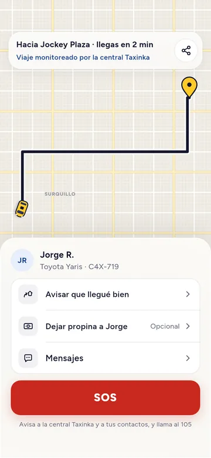
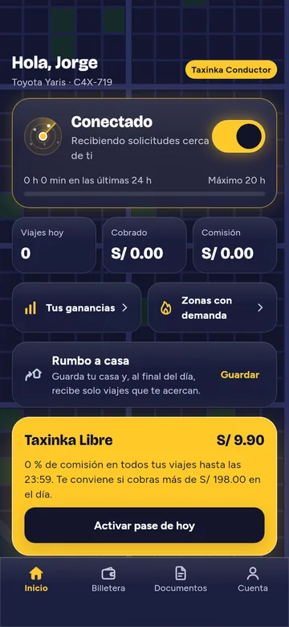
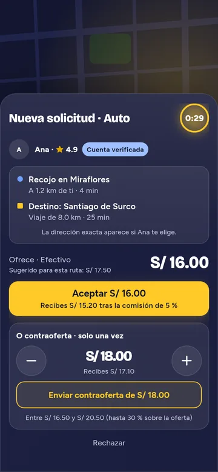
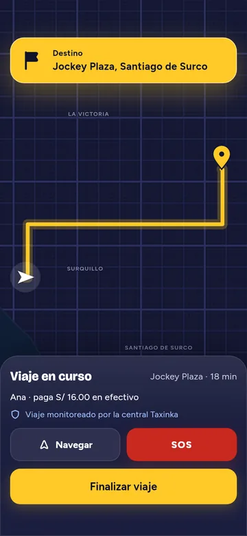

Taxinka
Para pasajeros
Pide un auto, una mototaxi o un envío, propone tu precio y elige entre las ofertas de los conductores.



Las dos apps completas, la de pasajeros y la de conductores, funcionando solas en tu teléfono o en tu computadora. Los conductores, las ofertas y los viajes son simulados: no se cobra nada y no se usa tu ubicación.
Para pasajeros
Pide un auto, una mototaxi o un envío, propone tu precio y elige entre las ofertas de los conductores.



Para conductores
Conéctate, recibe solicitudes cerca de ti, acepta o haz tu contraoferta y lleva el viaje hasta el final.



Para entrar, escribe cualquier celular que empiece con 9. El código aparece en la pantalla: es 123456.
Se instalan como «Taxinka Demo» y «Conductor Demo», aparte de las apps que saldrán en las tiendas.
Usa Probar en el navegador en Safari. Para tenerla como una app más, toca Compartir y luego Agregar a pantalla de inicio.
Apunta la cámara al código para abrir esta página.